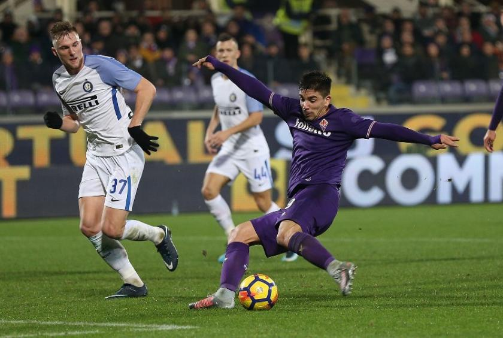
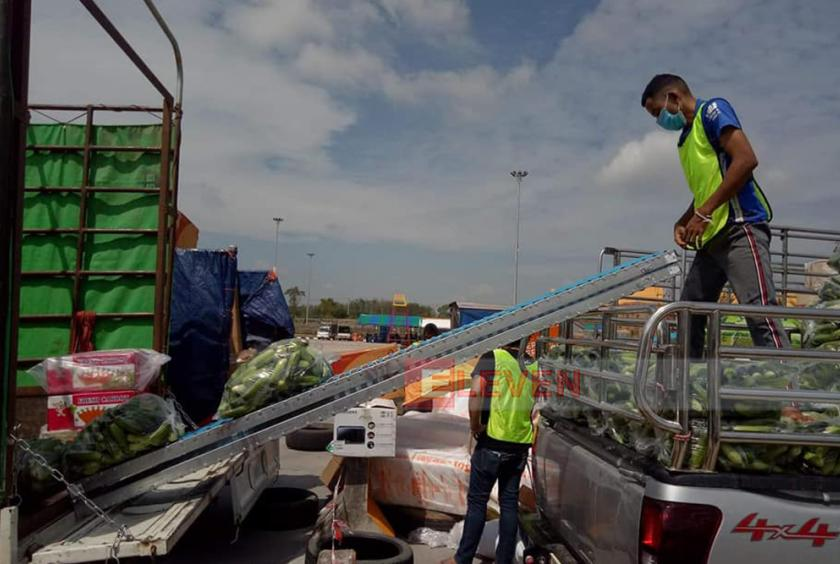
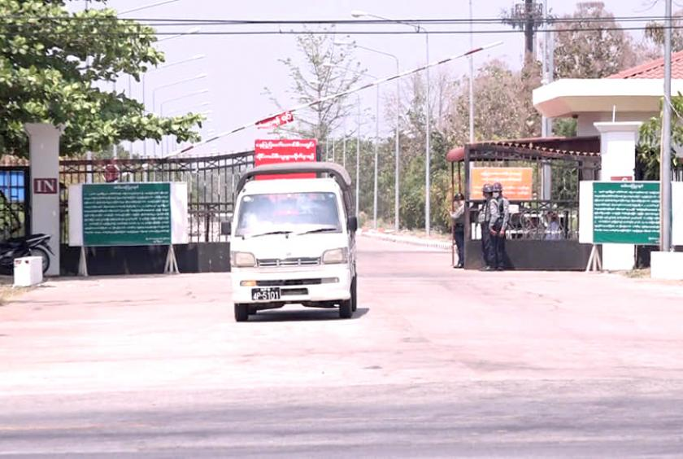
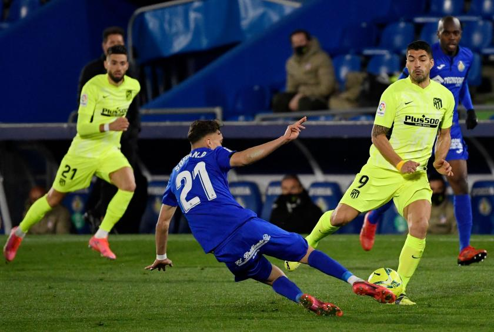
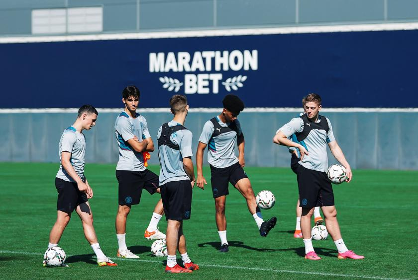

ကမ္ဘာ့ဖလားပြိုင်ပွဲအား နှစ်နှစ်တစ်ကြိမ် ပြောင်းလဲကျင်းပရန် ကြိုးပမ်းမှုကို CONMEBOL နှင့် ဥရောပထိပ်တန်းလိဂ်များ ထပ်မံကန့်ကွက်
SPORTS
ကမ္ဘာ့ဘောလုံးအဖွဲ့ချုပ် (FIFA) က ကမ္ဘာ့ဖလားပြိုင်ပွဲအား လေးနှစ်တစ်ကြိမ်အစား နှစ်နှစ်တစ်ကြိမ်အဖြစ် ပြောင်းလဲကျင်းပရန် ကြိုးပမ်းနေမှုကို တောင်အမေရိက ဘောလုံးအဖွဲ့ချုပ် (CONMEBOL) နှင့် ဥရောပထိပ်တန်းလိဂ် ပြိုင်ပွဲများကလည်း ထပ်မံကန့်ကွက် ခဲ့ကြောင်း သိရသည်။
FIFA ဥက္ကဋ္ဌ အင်ဖန်တီနိုနှင့် ကမ္ဘာလုံးဆိုင်ရာ ဘောလုံးဖွံ့ဖြိုးတိုးတက်ရေးအကြီးအကဲအဖြစ် ဆောင် ရွက်နေသည့် အာစင်ဝင်းဂါးတို့က ကမ္ဘာ့ဖလားပြိုင်ပွဲကို ပုံမှန်ကျင်းပ နေသည့် လေးနှစ်တစ်ကြိမ်အစား နှစ်နှစ်တစ်ကြိမ်အဖြစ် ပြောင်းလဲ ကျင်းပရန် ဆန္ဒရှိနေပြီး လာမည့်ရက် သတ္တပတ်များအတွင်း တရားဝင် အဆိုပြုမှုတင်သွင်း၍ သဘောထား ရယူရန် စီစဉ်နေကြောင်း သိရသည်။ ယင်းအစီအစဉ်ကို ဥရောပဘောလုံး အဖွဲ့ချုပ် (UEFA) ဥက္ကဋ္ဌ ဆယ်ဖာရင်က ပြင်းထန်စွာ ကန့်ကွက်ထား သလို တောင်အမေရိကဘောလုံး အဖွဲ့ချုပ် (CONMEBOL) အပြင် ပရီးမီးယားလိဂ်၊ လာလီဂါ၊ စီးရီးအေ စသည့် ဥရောပထိပ်တန်းလိဂ်ပြိုင်ပွဲ များကပါ လက်မခံကြောင်း ထုတ်ပြန်ခဲ့ခြင်းဖြစ်သည်။
"ဒုတိယကမ္ဘာစစ်တုန်းက ပယ်ဖျက်ခဲ့တာကလွဲရင် ၁၉၃၀ ကစပြီး ကမ္ဘာ့ဖလားကို လေးနှစ်တစ်ကြိမ် မပျက်မကွက်ကျင်းပခဲ့တာပါ။ အဲဒါ ကြောင့် လူတွေက ကမ္ဘာ့ဖလားပြိုင်ပွဲ ကို တန်ဖိုးထားကြတာဖြစ်ပြီး တကယ် လို့ ကမ္ဘာ့ဖလားပြိုင်ပွဲကိုသာ နှစ်နှစ် တစ်ကြိမ် ကျင်းပမယ်ဆိုရင် ပြိုင်ပွဲရဲ့ တန်ဖိုးက ကျဆင်းသွားပါလိမ့်မယ်။ ဒီအစီအစဉ်က ဘောလုံးရဲ့ အခြေခံ မူဝါဒတွေကို ဆန့်ကျင်နေတာပါ။ ကမ္ဘာ့ဖလားကို နှစ်နှစ်တစ်ကြိမ် ကျင်းပမယ်ဆိုရင် ဘောလုံးလောက ကို သတ်သလိုဖြစ်ပါလိမ့်မယ်။ ဒီ အစီအစဉ်ကို မဖြစ်မနေအကောင် အထည်ဖော်မယ်ဆိုရင် ကျွန်တော် တို့ ကမ္ဘာ့ဖလားပြိုင်ပွဲကို ဝင်မပြိုင်ဖို့ ဆုံးဖြတ်ဖြစ်နိုင်ပါတယ်။ ဥရောပ နိုင်ငံတွေက ကမ္ဘာ့ဖလားပြိုင်ပွဲကို ဝင်မပြိုင်ဘဲ သပိတ်မှောက်တာမျိုး ဖြစ်လာနိုင်ပါတယ်" ဟု UEFA ဥက္ကဋ္ဌ ဆယ်ဖာရင်က ပြောကြားထားသည်။
ထို့ပြင် CONMEBOL ကလည်း "ကမ္ဘာ့ဖလားပြိုင်ပွဲကို နှစ်နှစ် တစ်ကြိမ်ကျင်းပခြင်းဟာ ကမ္ဘာပေါ်မှာ အရေးပါဆုံးဘောလုံးပြိုင်ပွဲကို ပုံပျက်သွားစေနိုင်ပါတယ်။ ပြိုင်ပွဲရဲ့ အရည်အသွေး၊ သီးသန့်တည်ရှိနေ တဲ့ လက္ခဏာနဲ့ လက်ရှိလိုအပ်ချက် ဖြစ်တဲ့ စံချိန်စံညွှန်းတွေကိုလည်း လျော့ကျပျက်စီးစေနိုင်ပါတယ်။ အဲဒါက နိုင်ငံတကာဘောလုံးပြက္ခ ဒိန်ကို လက်တွေ့ကျကျစီမံခန့်ခွဲဖို့ လည်း မဖြစ်နိုင်ပါဘူး။ လက်ရှိအခြေ အနေမှာတောင် အချိန်ဇယားတွေ၊ ပွဲစဉ်တွေ၊ သွားလာရေးနဲ့ လုံလောက် တဲ့ပြင်ဆင်မှု စတဲ့အပိုင်းတွေက ရှုပ် ထွေးနေပါပြီ။ ဒီအခြေအနေက အပြောင်းအလဲလုပ်ဖို့ အဆိုပြုတာ တွေကို အကောင်အထည်ဖော်ဖို့ အရမ်းခက်ခဲပါတယ်။ ဒါဟာ ကလပ် နဲ့ နိုင်ငံတွေအတွက် တခြားပြိုင်ပွဲ တွေရဲ့ အရည်အသွေးကိုလည်း အန္တ ရာယ်ဖြစ်စေနိုင်ပါတယ်။ ကမ္ဘာ့ ဖလားပြိုင်ပွဲ တစ်ခုနဲ့တစ်ခုကြား ကာလကို လျှော့ချဖို့ လုံလောက်တဲ့ အားကစားဆိုင်ရာ အကြောင်းပြ ချက် မရှိပါဘူး။ ကမ္ဘာ့ဖလားပြိုင်ပွဲ ကို မကြာခဏကျင်းပဖို့ ဆွေးနွေးမှု တွေ လုပ်ဖူးပေမဲ့ နည်းပညာပိုင်းအရ ခွဲခြမ်းလေ့လာမှုတွေလုပ်တဲ့အခါ အဆိုပြုမှုတွေက ဖြစ်နိုင်ခြေတော် တော်မရှိဘူးဆိုတာ ပြသခဲ့ပါတယ်။ ဒါကြောင့် ယခုအခြေအနေအရ လက်ရှိကမ္ဘာ့ဖလားပြိုင်ပွဲပုံစံကိုပဲ ထောက်ခံသွားမှာပါ" ဟု ထုတ်ပြန်ခဲ့သည်။
ပရီးမီးယားလိဂ်၊ လာလီဂါ၊ စီး ရီးအေတို့အပါအဝင် ဥရောပထိပ် တန်းလိဂ် ၁၀ ခုကလည်း ကမ္ဘာ့ဖလား ပြိုင်ပွဲအား နှစ်နှစ်တစ်ကြိမ်ကျင်းပမည့်အစီအစဉ်ကို သဘောမတူ ကြောင်း ပါဝင်လက်မှတ်ရေးထိုးထား ကြောင်း စပိန်နိုင်ငံထုတ် Marca သတင်းစာက ဖော်ပြသည်။ ယင်း အစီအစဉ်မှာ ကလပ်အသင်းလောကကိုပါ ပျက်စီးစေလိမ့်မည်ဟု လိဂ်ပြိုင်ပွဲများက ထုတ်ပြန်ထားသည်။
FIFA ဥက္ကဋ္ဌ အင်ဖန်တီနိုနှင့် ကမ္ဘာလုံးဆိုင်ရာ ဘောလုံးဖွံ့ဖြိုးတိုးတက်ရေးအကြီးအကဲအဖြစ် ဆောင် ရွက်နေသည့် အာစင်ဝင်းဂါးတို့က ကမ္ဘာ့ဖလားပြိုင်ပွဲကို ပုံမှန်ကျင်းပ နေသည့် လေးနှစ်တစ်ကြိမ်အစား နှစ်နှစ်တစ်ကြိမ်အဖြစ် ပြောင်းလဲ ကျင်းပရန် ဆန္ဒရှိနေပြီး လာမည့်ရက် သတ္တပတ်များအတွင်း တရားဝင် အဆိုပြုမှုတင်သွင်း၍ သဘောထား ရယူရန် စီစဉ်နေကြောင်း သိရသည်။ ယင်းအစီအစဉ်ကို ဥရောပဘောလုံး အဖွဲ့ချုပ် (UEFA) ဥက္ကဋ္ဌ ဆယ်ဖာရင်က ပြင်းထန်စွာ ကန့်ကွက်ထား သလို တောင်အမေရိကဘောလုံး အဖွဲ့ချုပ် (CONMEBOL) အပြင် ပရီးမီးယားလိဂ်၊ လာလီဂါ၊ စီးရီးအေ စသည့် ဥရောပထိပ်တန်းလိဂ်ပြိုင်ပွဲ များကပါ လက်မခံကြောင်း ထုတ်ပြန်ခဲ့ခြင်းဖြစ်သည်။
"ဒုတိယကမ္ဘာစစ်တုန်းက ပယ်ဖျက်ခဲ့တာကလွဲရင် ၁၉၃၀ ကစပြီး ကမ္ဘာ့ဖလားကို လေးနှစ်တစ်ကြိမ် မပျက်မကွက်ကျင်းပခဲ့တာပါ။ အဲဒါ ကြောင့် လူတွေက ကမ္ဘာ့ဖလားပြိုင်ပွဲ ကို တန်ဖိုးထားကြတာဖြစ်ပြီး တကယ် လို့ ကမ္ဘာ့ဖလားပြိုင်ပွဲကိုသာ နှစ်နှစ် တစ်ကြိမ် ကျင်းပမယ်ဆိုရင် ပြိုင်ပွဲရဲ့ တန်ဖိုးက ကျဆင်းသွားပါလိမ့်မယ်။ ဒီအစီအစဉ်က ဘောလုံးရဲ့ အခြေခံ မူဝါဒတွေကို ဆန့်ကျင်နေတာပါ။ ကမ္ဘာ့ဖလားကို နှစ်နှစ်တစ်ကြိမ် ကျင်းပမယ်ဆိုရင် ဘောလုံးလောက ကို သတ်သလိုဖြစ်ပါလိမ့်မယ်။ ဒီ အစီအစဉ်ကို မဖြစ်မနေအကောင် အထည်ဖော်မယ်ဆိုရင် ကျွန်တော် တို့ ကမ္ဘာ့ဖလားပြိုင်ပွဲကို ဝင်မပြိုင်ဖို့ ဆုံးဖြတ်ဖြစ်နိုင်ပါတယ်။ ဥရောပ နိုင်ငံတွေက ကမ္ဘာ့ဖလားပြိုင်ပွဲကို ဝင်မပြိုင်ဘဲ သပိတ်မှောက်တာမျိုး ဖြစ်လာနိုင်ပါတယ်" ဟု UEFA ဥက္ကဋ္ဌ ဆယ်ဖာရင်က ပြောကြားထားသည်။
ထို့ပြင် CONMEBOL ကလည်း "ကမ္ဘာ့ဖလားပြိုင်ပွဲကို နှစ်နှစ် တစ်ကြိမ်ကျင်းပခြင်းဟာ ကမ္ဘာပေါ်မှာ အရေးပါဆုံးဘောလုံးပြိုင်ပွဲကို ပုံပျက်သွားစေနိုင်ပါတယ်။ ပြိုင်ပွဲရဲ့ အရည်အသွေး၊ သီးသန့်တည်ရှိနေ တဲ့ လက္ခဏာနဲ့ လက်ရှိလိုအပ်ချက် ဖြစ်တဲ့ စံချိန်စံညွှန်းတွေကိုလည်း လျော့ကျပျက်စီးစေနိုင်ပါတယ်။ အဲဒါက နိုင်ငံတကာဘောလုံးပြက္ခ ဒိန်ကို လက်တွေ့ကျကျစီမံခန့်ခွဲဖို့ လည်း မဖြစ်နိုင်ပါဘူး။ လက်ရှိအခြေ အနေမှာတောင် အချိန်ဇယားတွေ၊ ပွဲစဉ်တွေ၊ သွားလာရေးနဲ့ လုံလောက် တဲ့ပြင်ဆင်မှု စတဲ့အပိုင်းတွေက ရှုပ် ထွေးနေပါပြီ။ ဒီအခြေအနေက အပြောင်းအလဲလုပ်ဖို့ အဆိုပြုတာ တွေကို အကောင်အထည်ဖော်ဖို့ အရမ်းခက်ခဲပါတယ်။ ဒါဟာ ကလပ် နဲ့ နိုင်ငံတွေအတွက် တခြားပြိုင်ပွဲ တွေရဲ့ အရည်အသွေးကိုလည်း အန္တ ရာယ်ဖြစ်စေနိုင်ပါတယ်။ ကမ္ဘာ့ ဖလားပြိုင်ပွဲ တစ်ခုနဲ့တစ်ခုကြား ကာလကို လျှော့ချဖို့ လုံလောက်တဲ့ အားကစားဆိုင်ရာ အကြောင်းပြ ချက် မရှိပါဘူး။ ကမ္ဘာ့ဖလားပြိုင်ပွဲ ကို မကြာခဏကျင်းပဖို့ ဆွေးနွေးမှု တွေ လုပ်ဖူးပေမဲ့ နည်းပညာပိုင်းအရ ခွဲခြမ်းလေ့လာမှုတွေလုပ်တဲ့အခါ အဆိုပြုမှုတွေက ဖြစ်နိုင်ခြေတော် တော်မရှိဘူးဆိုတာ ပြသခဲ့ပါတယ်။ ဒါကြောင့် ယခုအခြေအနေအရ လက်ရှိကမ္ဘာ့ဖလားပြိုင်ပွဲပုံစံကိုပဲ ထောက်ခံသွားမှာပါ" ဟု ထုတ်ပြန်ခဲ့သည်။
ပရီးမီးယားလိဂ်၊ လာလီဂါ၊ စီး ရီးအေတို့အပါအဝင် ဥရောပထိပ် တန်းလိဂ် ၁၀ ခုကလည်း ကမ္ဘာ့ဖလား ပြိုင်ပွဲအား နှစ်နှစ်တစ်ကြိမ်ကျင်းပမည့်အစီအစဉ်ကို သဘောမတူ ကြောင်း ပါဝင်လက်မှတ်ရေးထိုးထား ကြောင်း စပိန်နိုင်ငံထုတ် Marca သတင်းစာက ဖော်ပြသည်။ ယင်း အစီအစဉ်မှာ ကလပ်အသင်းလောကကိုပါ ပျက်စီးစေလိမ့်မည်ဟု လိဂ်ပြိုင်ပွဲများက ထုတ်ပြန်ထားသည်။
Most Read News


Business
ကုန်စည်ပို့ဆောင်မှု ယာယီရပ်ဆိုင်းထားသည့် မြဝတီ-မဲဆောက် အမှတ်၂ ချစ်ကြည်ရေးတံတားမှ ကုန်စည်ပို့ဆောင်မှုများ စတင်ပြုလုပ်
ထိုင်းမြန်မာ နှစ်နိုင်ငံကုန်သွယ်မှု ပြုလုပ်နေသော အမှတ်၂ ချစ်ကြည်ရေးတံတားကို အောက်တိုဘာလ ၁၈ ရက်နေ့ကကုန်သွယ်မှု ယာယီ ရပ်ဆိုင်းခဲ့ရာမှ အောက်တိုဘာလ ၂၆ ရက်နေ့တွင် ပြန်လည်ကုန်သွယ်မှု ပြုလုပ်ရန် ခွင့်ပြုလိုက်ပြီ ဖြစ်ကြောင်း သိရသည်။
Entertainment
Freedom House က ထုတ်ပြန်သည့် နှစ်ပတ်လည် အစီရင်ခံစာတွင် အင်တာနက်လွတ်လပ်ခွင့်နှင့် ပတ်သက်၍ မြန်မာနိုင်ငံအား ရွေးထုတ်ကာ အပြင်းအထန် ဝေဖန်ထား
စက်တာဘာ ၂၁ ရက်၌ Freedom House က ထုတ်ပြန်သည့် နှစ်ပတ်လည် အစီရင်ခံစာတွင် အင်တာနက် လွတ်လပ်ခွင့်နှင့် ပတ်သက်၍ မြန်မာနိုင်ငံအား ရွေးထုတ်ကာ အပြင်းအထန် ဝေဖန်ထားကြောင်း သိရသည်။

Policy
CLMV နိုင်ငံများနှင့် နှိုင်းယှဉ်လျှင်ပင် မြန်မာနိုင်ငံသို့ စီးဝင်သည့် FDI အရွယ်အစားမှာ ကျေနပ်အားရဖွယ် မရှိသေးသည့်အတွက် FDI စီးဝင်မှုများကို ထပ်မံချဲ့ထွင်ရန်လိုအပ်ဟု ဖော်ပြ
CLMV နိုင်ငံများနှင့် နှိုင်းယှဉ်လျှင် မြန်မာနိုင်ငံသို့ စီးဝင်သည့် နိုင်ငံခြားရင်းနှီးမြှုပ်နှံမှု(FDI) အရွယ်အစားမှာ ကျေနပ် အားရဖွယ် မရှိသေးသည့်အတွက် FDI စီးဝင်မှုများကို ထပ်မံချဲ့ထွင်ရန် လိုအပ်ကြောင်း မြန်မာနိုင်ငံရင်းနှီးမြှုပ်နှံမှု မြှင့်တင်ရေးစီမံကိန်း (Myanmar Investment Promotion Plan (MIPP) တွင် ဖော်ပြ ထားသည်။Most Recent
Business
ကုန်စည်ပို့ဆောင်မှု ယာယီရပ်ဆိုင်းထားသည့် မြဝတီ-မဲဆောက် အမှတ်၂ ချစ်ကြည်ရေးတံတားမှ ကုန်စည်ပို့ဆောင်မှုများ စတင်ပြုလုပ်
ထိုင်းမြန်မာ နှစ်နိုင်ငံကုန်သွယ်မှု ပြုလုပ်နေသော အမှတ်၂ ချစ်ကြည်ရေးတံတားကို အောက်တိုဘာလ ၁၈ ရက်နေ့ကကုန်သွယ်မှု ယာယီ ရပ်ဆိုင်းခဲ့ရာမှ အောက်တိုဘာလ ၂၆ ရက်နေ့တွင် ပြန်လည်ကုန်သွယ်မှု ပြုလုပ်ရန် ခွင့်ပြုလိုက်ပြီ ဖြစ်ကြောင်း သိရသည်။
Entertainment
Freedom House က ထုတ်ပြန်သည့် နှစ်ပတ်လည် အစီရင်ခံစာတွင် အင်တာနက်လွတ်လပ်ခွင့်နှင့် ပတ်သက်၍ မြန်မာနိုင်ငံအား ရွေးထုတ်ကာ အပြင်းအထန် ဝေဖန်ထား
စက်တာဘာ ၂၁ ရက်၌ Freedom House က ထုတ်ပြန်သည့် နှစ်ပတ်လည် အစီရင်ခံစာတွင် အင်တာနက် လွတ်လပ်ခွင့်နှင့် ပတ်သက်၍ မြန်မာနိုင်ငံအား ရွေးထုတ်ကာ အပြင်းအထန် ဝေဖန်ထားကြောင်း သိရသည်။
Policy
CLMV နိုင်ငံများနှင့် နှိုင်းယှဉ်လျှင်ပင် မြန်မာနိုင်ငံသို့ စီးဝင်သည့် FDI အရွယ်အစားမှာ ကျေနပ်အားရဖွယ် မရှိသေးသည့်အတွက် FDI စီးဝင်မှုများကို ထပ်မံချဲ့ထွင်ရန်လိုအပ်ဟု ဖော်ပြ
CLMV နိုင်ငံများနှင့် နှိုင်းယှဉ်လျှင် မြန်မာနိုင်ငံသို့ စီးဝင်သည့် နိုင်ငံခြားရင်းနှီးမြှုပ်နှံမှု(FDI) အရွယ်အစားမှာ ကျေနပ် အားရဖွယ် မရှိသေးသည့်အတွက် FDI စီးဝင်မှုများကို ထပ်မံချဲ့ထွင်ရန် လိုအပ်ကြောင်း မြန်မာနိုင်ငံရင်းနှီးမြှုပ်နှံမှု မြှင့်တင်ရေးစီမံကိန်း (Myanmar Investment Promotion Plan (MIPP) တွင် ဖော်ပြ ထားသည်။
Business
ကုန်စည်ပို့ဆောင်မှု ယာယီရပ်ဆိုင်းထားသည့် မြဝတီ-မဲဆောက် အမှတ်၂ ချစ်ကြည်ရေးတံတားမှ ကုန်စည်ပို့ဆောင်မှုများ စတင်ပြုလုပ်
ထိုင်းမြန်မာ နှစ်နိုင်ငံကုန်သွယ်မှု ပြုလုပ်နေသော အမှတ်၂ ချစ်ကြည်ရေးတံတားကို အောက်တိုဘာလ ၁၈ ရက်နေ့ကကုန်သွယ်မှု ယာယီ ရပ်ဆိုင်းခဲ့ရာမှ အောက်တိုဘာလ ၂၆ ရက်နေ့တွင် ပြန်လည်ကုန်သွယ်မှု ပြုလုပ်ရန် ခွင့်ပြုလိုက်ပြီ ဖြစ်ကြောင်း သိရသည်။
Entertainment
Freedom House က ထုတ်ပြန်သည့် နှစ်ပတ်လည် အစီရင်ခံစာတွင် အင်တာနက်လွတ်လပ်ခွင့်နှင့် ပတ်သက်၍ မြန်မာနိုင်ငံအား ရွေးထုတ်ကာ အပြင်းအထန် ဝေဖန်ထား
စက်တာဘာ ၂၁ ရက်၌ Freedom House က ထုတ်ပြန်သည့် နှစ်ပတ်လည် အစီရင်ခံစာတွင် အင်တာနက် လွတ်လပ်ခွင့်နှင့် ပတ်သက်၍ မြန်မာနိုင်ငံအား ရွေးထုတ်ကာ အပြင်းအထန် ဝေဖန်ထားကြောင်း သိရသည်။
Policy
CLMV နိုင်ငံများနှင့် နှိုင်းယှဉ်လျှင်ပင် မြန်မာနိုင်ငံသို့ စီးဝင်သည့် FDI အရွယ်အစားမှာ ကျေနပ်အားရဖွယ် မရှိသေးသည့်အတွက် FDI စီးဝင်မှုများကို ထပ်မံချဲ့ထွင်ရန်လိုအပ်ဟု ဖော်ပြ
CLMV နိုင်ငံများနှင့် နှိုင်းယှဉ်လျှင် မြန်မာနိုင်ငံသို့ စီးဝင်သည့် နိုင်ငံခြားရင်းနှီးမြှုပ်နှံမှု(FDI) အရွယ်အစားမှာ ကျေနပ် အားရဖွယ် မရှိသေးသည့်အတွက် FDI စီးဝင်မှုများကို ထပ်မံချဲ့ထွင်ရန် လိုအပ်ကြောင်း မြန်မာနိုင်ငံရင်းနှီးမြှုပ်နှံမှု မြှင့်တင်ရေးစီမံကိန်း (Myanmar Investment Promotion Plan (MIPP) တွင် ဖော်ပြ ထားသည်။RELATED NEWS

လော်တာရိုမာတီနက်ဇ်ကို တစ်နှစ်လစာ ပေါင် (၅)သန်းဖြင့် နှစ်ရှည်စာချုပ်ရန် အင်တာမီလန်အသင်း စီစဉ်နေ
အင်တာမီလန်အသင်းသည် ၎င်းတို့အသင်း၏ အဓိကတိုက်စစ်မှူး လူကာကူအား ချယ်လ်ဆီးအသင်းထံ ရောင်းထုတ်ခဲ့ပြီးနောက် အားထားရသည့် ကစားသမားတစ်ဦးဖြစ်သည့် လော်တာရိုမာတီနက်ဇ်အား တစ်နှစ်လစာ ပေါင် (၅)သန်းဖြင့် (၅)နှစ်စာချုပ်ချုပ် ဆိုရန် စီစဉ်နေကြောင်း သိရှိရသည်။

လိဂ်ဖလား(Carabao Cup) တတိယအဆင့်ပွဲစဉ်များ ပွဲကြိုသုံးသပ်ချက်
အဲဗာတန်အသင်း ပရီးမီးယားလိဂ်မှာ ရှုံးပွဲစတွေ့ခဲ့ပေမဲ့ အခုပွဲအပေါ် သက်ရောက်မှုနည်းပါလိမ့်မယ်။ အသင်းရဲ့ကစားဟန် ယုံကြည်မှုတစ်ခုကိုတည်ဆောက်နိုင်ဖို့လည်း ဖလားပွဲတွေမှာ နိုင်ပွဲတွေလိုအပ်ပါတယ်။ အဝေးကွင်းပေမယ့် အဲဗာတန်တို့ QPR ကိုတော့ အနိုင်ကစားမှာပါ။တံကောက်ကြောဒဏ်ရာကြောင့် ဘေးလ် (၈)ပတ်ခန့်အနားယူရမည် ဖြစ်ပြီး ရီးယဲလ်ကစားသမားဘဝ (၂၄)ကြိမ်မြောက်ဒဏ်ရာရရှိခြင်းဖြစ်
ရီးယဲလ်မက်ဒရစ်အသင်း၏ တောင်ပံကစားသမား ဂါရတ်ဘေးလ်သည် တံကောက်ကြောဒဏ်ရာကြောင့် (၈)ပတ်ခန့်အနားယူရမည်ဖြစ်ကြောင်း စပိန်အားကစား သတင်းစာ AS က ဖော်ပြခဲ့သည်။ အသက် (၃၂)နှစ်အရွယ် ရှိ ဝေးလ်စ်လက်ရွေးစင်တောက်ပံကစားသမား ဂါရတ် ဘေးလ်သည် ၎င်းင်းကာလရှည်ခံစားနေရသည့် တံကောက် ကြောဒဏ်ရာကို ပြန်လည်ရရှိခဲ့ခြင်းဖြစ်ပြီး ရီးယဲလ် မက်ဒရစ်အသင်း၏ ပြိုင်ပွဲစုံပွဲစဉ် (၁၁)ပွဲခန့်ကို လွဲချော် မည်ဖြစ်ကြောင်း သိရသည်။အီတလီစီးရီးအေပွဲစဉ် (၅) ပွဲကြိုသုံးသပ်ချက်စ်
အင်တာမီလန်ကို ဂိုးဒါဇင်ဝက်ပေးရပြီး အရှက်တကွဲ အရေးနိမ့်မှုကနေ ဘိုလော့ဂ်နာ အမြန်ဆုံး ရုန်းထွက်ချင်နေပါ လိမ့်မယ်။ ဖြစ်သင့်တာထက် ပိုဆိုးတဲ့ရလဒ်မျိုးဖြစ်ပြီး မတည် ငြိမ်သေးတဲ့ ဂျီနိုအာနဲ့ ရင်ဆိုင်ရမှာဖြစ်လို့လည်း ဘိုလော့ဂ်နာ အိမ်ကွင်းမှာ သိက္ခာပြန်ဆယ်ပါလိမ့်မယ်။လော်တာရိုမာတီနက်ဇ်ကို တစ်နှစ်လစာ ပေါင် (၅)သန်းဖြင့် နှစ်ရှည်စာချုပ်ရန် အင်တာမီလန်အသင်း စီစဉ်နေ
အင်တာမီလန်အသင်းသည် ၎င်းတို့အသင်း၏ အဓိကတိုက်စစ်မှူး လူကာကူအား ချယ်လ်ဆီးအသင်းထံ ရောင်းထုတ်ခဲ့ပြီးနောက် အားထားရသည့် ကစားသမားတစ်ဦးဖြစ်သည့် လော်တာရိုမာတီနက်ဇ်အား တစ်နှစ်လစာ ပေါင် (၅)သန်းဖြင့် (၅)နှစ်စာချုပ်ချုပ် ဆိုရန် စီစဉ်နေကြောင်း သိရှိရသည်။လိဂ်ဖလား(Carabao Cup) တတိယအဆင့်ပွဲစဉ်များ ပွဲကြိုသုံးသပ်ချက်
အဲဗာတန်အသင်း ပရီးမီးယားလိဂ်မှာ ရှုံးပွဲစတွေ့ခဲ့ပေမဲ့ အခုပွဲအပေါ် သက်ရောက်မှုနည်းပါလိမ့်မယ်။ အသင်းရဲ့ကစားဟန် ယုံကြည်မှုတစ်ခုကိုတည်ဆောက်နိုင်ဖို့လည်း ဖလားပွဲတွေမှာ နိုင်ပွဲတွေလိုအပ်ပါတယ်။ အဝေးကွင်းပေမယ့် အဲဗာတန်တို့ QPR ကိုတော့ အနိုင်ကစားမှာပါ။တံကောက်ကြောဒဏ်ရာကြောင့် ဘေးလ် (၈)ပတ်ခန့်အနားယူရမည် ဖြစ်ပြီး ရီးယဲလ်ကစားသမားဘဝ (၂၄)ကြိမ်မြောက်ဒဏ်ရာရရှိခြင်းဖြစ်
ရီးယဲလ်မက်ဒရစ်အသင်း၏ တောင်ပံကစားသမား ဂါရတ်ဘေးလ်သည် တံကောက်ကြောဒဏ်ရာကြောင့် (၈)ပတ်ခန့်အနားယူရမည်ဖြစ်ကြောင်း စပိန်အားကစား သတင်းစာ AS က ဖော်ပြခဲ့သည်။ အသက် (၃၂)နှစ်အရွယ် ရှိ ဝေးလ်စ်လက်ရွေးစင်တောက်ပံကစားသမား ဂါရတ် ဘေးလ်သည် ၎င်းင်းကာလရှည်ခံစားနေရသည့် တံကောက် ကြောဒဏ်ရာကို ပြန်လည်ရရှိခဲ့ခြင်းဖြစ်ပြီး ရီးယဲလ် မက်ဒရစ်အသင်း၏ ပြိုင်ပွဲစုံပွဲစဉ် (၁၁)ပွဲခန့်ကို လွဲချော် မည်ဖြစ်ကြောင်း သိရသည်။အီတလီစီးရီးအေပွဲစဉ် (၅) ပွဲကြိုသုံးသပ်ချက်စ်
အင်တာမီလန်ကို ဂိုးဒါဇင်ဝက်ပေးရပြီး အရှက်တကွဲ အရေးနိမ့်မှုကနေ ဘိုလော့ဂ်နာ အမြန်ဆုံး ရုန်းထွက်ချင်နေပါ လိမ့်မယ်။ ဖြစ်သင့်တာထက် ပိုဆိုးတဲ့ရလဒ်မျိုးဖြစ်ပြီး မတည် ငြိမ်သေးတဲ့ ဂျီနိုအာနဲ့ ရင်ဆိုင်ရမှာဖြစ်လို့လည်း ဘိုလော့ဂ်နာ အိမ်ကွင်းမှာ သိက္ခာပြန်ဆယ်ပါလိမ့်မယ်။| About Us | |
| Contact US | |
| Follow Us : | |
| +95982376789 | |
| 24-HOURS AUTOMATED SERVICES | |
| eyesnews@eyes.com |